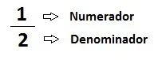

Trabalho de Matemática
Feito por: Safira, Pedro, Kevillin e André
Lista de conteúdos:
Equação de 1° grauEquação de 2° grau
Sistema de equações do 2° grau
Fração
Porcentagem
Probabilidade
estou escondido
Equação de 1° grau
Uma equação de 1° grau estabelece uma relação de igualdade entre termos conhecidos e desconhecidos (também chamados de incógnitas!)
Esses termos são representados sob a forma:
ax + b = 0
Onde a e b são números reais diferentes de zero (a ≠ 0) e x representando a incógnita.
Exemplos de equação de 1° grau:
5.x = 10 /// 2x + 6 = 0 /// 12 = 9a + b
Como resolver?
Primeiramente é preciso isolar as incógnitas, colocando os termos desconhecidos de um lado da igualdade e os termos conhecidos do outro.
Mas saiba que ao trocar os elementos de lugar a igualdade ainda precisa ser verdadeira, invertendo então o sinal do elemento.
Segue o exemplo: 8x - 3 = 5 → 8x = 5 + 3 → 8x = 8
Então agora passamos o 8 que está multiplicando o x, se tornando uma divisão:
x = 8/8 → x = 1
Conclui-se que a incógnita x é igual a 1.
Mas e se for negativo?
Se a parte variável ou a incógnita forem negativos, multiplicamos todos os valores por -1, invertendo os sinais, por exemplo:
-9x = -90 → (multiplique todos por -1) → 9x = 90
--Exercícios para praticar!--
Dificuldade fácil
Exercício 1: x + 7 = 12
Exercício 2: 5x - 4 = 11
Dificuldade média
Exercício 3: 2x + 5 = 3x - 4
Exercício 4:
Ana nasceu 8 anos depois de sua irmã Natália. Em determinado momento da vida, Natália possuía o triplo da idade de Ana. Calcule a idade de Ana.
Dificuldade difícil
Exercício 5: 2(x + 4) = 3(x - 1)
Voltar a lista de conteúdos
Equação de 2° grau
Em uma equação do 2° grau o x representa uma incógnita e as letras a, b e c são chamadas de coeficientes da equação.
É representada por:
ax² + bx + c = 0
Os coeficientes são números reais, com a sendo diferente de zero (senão seria uma equação de 1° grau)
Para resolver uma equação do 2° grau é preciso achar os valores reais de x, esses valores são chamados de raízes da questão
Tendo no máximo 2 raízes reais.
Equação do 2° grau completa
Uma equação do 2° grau completa é aquela que apresenta todos os coeficientes sendo diferentes de 0 (a, b, c ≠ 0).
Exemplo: 5x² + 2x + 2 = 0
Equação do 2° grau incompleta
Uma equação do 2° grau é incompleta quando os coeficientes b e/ou c são iguais a 0 (b, c = 0)
Exemplos: 3x² + x = 0 /// 9x² = 0 /// 4x² + 8 = 0
Como resolver?
Equação do 2° grau completa
Quando a equação é completa, nós usamos a fórmula de Bhaskara para achar as raízes da equação e é representada da seguinte maneira:

Para determinarmos o delta (Δ) nós usamos:

Agora como resolvemos? É simples:
1. Identificar os coeficientes: a está sempre ao lado de x², b está sempre ao lado de x e c está sempre sozinho.
obs: se não houver nada ao lado de x², então isso significa que a é igual a 1!
2. Calcular o delta: Substitua os coeficientes pelos números que você achar e ache o resultado. Se o valor de delta for maior que 0, então a equação terá duas raízes reais e distintas. Se for menor, então a equação não terá raízes. Se for igual, então a equação terá uma raíz.
3. Calcular as raízes: Substitua os coeficientes na fórmula de bhaskara e o delta para os valores que você encontrou.
(caso delta seja menor que 0 então a equação já acabou e não é mais preciso seguir essas instruções)
Exemplo
2x² - 3x - 5 = 0
1. Identifique: a = 2. b = -3. c = -5.
2. Calcular o delta: (-3)² - 4 . (2) . (-5) → 9 + 40 → 49
O valor de delta é maior que 0! Então teremos duas raízes!
3. Calcular as raízes: Primeiro nós iremos usar a soma:

O valor da primeira raíz é 5/2!
Agora usaremos a subtração:

O valor da segunda raíz é -1!
Equação do 2° grau incompleta
Para equações do 2° grau incompletas, nós podemos resolver isolando as incógnitas.
Exemplo
4x² - 16 = 0

Entenda que existem 2 respostas para a raiz quadrada de 4 (2 e -2)
Então colocamos o sinal de ± para indicar que as raízes da equação é 2 e -2
--Exercícios para praticar!--
Dificuldade fácil
Exercício 1: x² - 5x + 6 = 0
Exercício 2: x² - 9 = 0
Dificuldade média
Exercício 3: x² + 4x - 12 = 0
Exercício 4: 2x² - 8x + 6 = 0
Dificuldade difícil
Exercício 5:
Encontre o valor do x para que a área do retângulo abaixo seja igual a 2.

Voltar a lista de conteúdos
Sistema de equações do 2° grau
Um sistema de equação do 2° grau é usado quando queremos encontrar o valor de 2 incógnitas diferentes para satisfazer duas equações diferentes.
As equações que possam ter nesse sistema podem ser tanto de 1° como de 2° grau.
Exemplo
3x² - y = 5
y - 6x = 4
Como resolver?
Método da adição!
Para resolver o problema acima, podemos usar o método da adição e somar os termos semelhantes da 1° com os da 2° equação.
Reduzindo o sistema para uma só equação!

Nós ainda podemos simplificar os termos da equação que conseguimos por 3 para facilitar ainda mais!
Dando em: x² - 2x - 3 = 0
Após fazer o calculo da equação de 2° grau, obtemos:
x¹ = 3 e x² = -1
Achamos os valores de x! Mas ainda é preciso achar o valor de y.
Então basta escolher qualquer uma das equações que estava no sistema de equação e substituir o x pelos valores que encontramos:
y¹ - 6x = 4 → y¹ - 6 . 3 = 4 → y¹ = 4 + 18 → y¹ = 22
O valor de y¹ é 22!
y² - 6 . (-1) = 4 → y² + 6 = 4 → y² = -2
O valor de y² é -2!
Agora sabemos que os valores que satisfazem ambas as equações são (32, 22) e (-1, -2).
--Exercícios para praticar!--
Dificuldade fácil
Exercício 1:
y = x + 2
y = x² - 4
Exercício 2:
y = 2x
y = x² - 3
Dificuldade média
Exercício 3:
y = x + 3
y = x² - 2x - 3
Exercício 4:
y = 2x - 1
y = x² - 4
Dificuldade difícil
Exercício 5:
y = x² - 4x + 3
y = 2x - 1
Voltar a lista de conteúdos
Fração
Uma fração corresponde a uma representação das partes de um todo.
Ela determina a divisão de partes iguais sendo que cada parte é uma fração do inteiro.
Nas frações, o termo superior é chamado de numerador enquanto o termo inferior é chamado de denominador:

Tipos de frações
--Fração própria--
São frações em que o numerador é menor que o denominador, ou seja, representa um número menor que um inteiro
Ex: 2/7
--Fração imprópria--
São frações em que o numerador é maior, ou seja, representa um número maior que o inteiro.
Ex: 5/3
--Função aparente--
São frações em que o numerador é múltiplo ao denominador, ou seja, representa um número inteiro escrito em forma de fração.
Ex: 6/3 = 2
--Fração mista--
É constituída por uma parte inteira e uma fracionária representada por números mistos.
Ex: 1 2/6. (um inteiro e dois sextos)
Obs: há ainda mais tipos, como: equivalente, irredutível, unitária, egípcia, decimal, composta, contínua, algébrica.
Como resolver?
Adição:
Para somar frações é necessário identificar se os denominadores são iguais ou diferentes.
Se forem iguais, basta repetir o denominador e somar os numeradores.
Se forem diferentes, antes de somar devemos transformar as frações em frações equivalentes de mesmo denominador.
Neste caso, calculamos o Mínimo Múltiplo Comum (MMC) entre os denominadores das frações que queremos somar, esse valor passa a ser o novo denominador das frações.
Além disso, devemos dividir o MMC encontrado pelo denominador e o resultado multiplicamos pelo numerador de cada fração. Esse valor passa a ser o novo numerador.
Exemplos:

Subtração:
Para subtrair frações temos que ter o mesmo cuidado que temos na soma, ou seja, verificar se os denominadores são iguais.
Se forem, repetimos o denominador e subtraímos os numeradores.
Se forem diferentes, fazemos os mesmos procedimentos da soma, para então subtrair (ao invés de somar)
Exemplos:

Multiplicação:
Para multiplicar frações, basta multiplicar os numeradores entre si e os denominadores entre si.
bem fácil!
Exemplos:

Divisão:
Na divisão entre duas frações, multiplica-se a primeira fração pelo inverso da segunda.
Ou seja, inverte-se o numerador e o denominador da segunda fração.
Exemplos:

--Exercícios para praticar!--
Dificuldade fácil
Exercício 1: 1/5 + 2/5
Exercício 2: 7/8 - 3/8
Dificuldade média
Exercício 3: 1/2 + 1/3
Exercício 4: 3/4 - 1/6
Dificuldade difícil
Exercício 5: 2/3 + 3/4 - 1/6
Voltar a lista de conteúdos
Porcentagem
Uma porcentagem representa a razão cujo denominador é igual a 100 e indica uma comparação de uma parte com o todo.
O símbolo % é usado para designar a porcentagem.
Um valor em porcentagem pode ainda ser expresso na forma de fração centesimal (denominador igual a 100) ou como um número decimal.
Exemplo:
30% = 30/100 = 0,30
Como resolver?
É possível usar vários métodos para resolver uma porcentagem mas irei mostrar apenas 3 métodos distintos:
1.Regra de três
2.transformar a porcentagem em fração com denominador igual a 100
3.transformar a porcentagem em número decimal
Regra de três:
Exemplo: calcular 30% de 90
Para usar a regra de três vamos considerar que 90 corresponde ao todo, ou seja, 100%.
O valor que queremos encontrar chamaremos x.
A regra de três será expressa como:

100.x = 90.30
100x = 2700
x = 2700/100 → (corta os 0) → 27
Transformar em fração:
Iremos usar o mesmo exemplo!
Para resolver usando frações, primeiro temos que transformar a porcentagem em uma fração com denominador igual a 100:
30% → 30/100 → 3/10
3/10 . 90 → 27
Transformar em número decimal:
porcentagem é só isso?
30% = 0,3
0,3 . 90 = 27
Deu para perceber que nos 3 métodos o resultado foi 27.
Ou seja, 30% de 90 é 27!
--Exercícios para praticar!--
Dificuldade fácil
Exercício 1: 10% de 80
Exercício 2: 20% de 150
Dificuldade média
Exercício 3: 15% de 240
Exercício 4: 8% de 125
Dificuldade difícil
Exercício 5: 45 é quantos % de 150?
Voltar a lista de conteúdos
Probabilidade
A probabilidade é uma medida da chance de algo acontecer.
A probabilidade associa a ocorrência de um resultado a um valor que varia de 0 a 1 e, quanto mais próximo de 1, maior é a certeza da sua ocorrência.
O cálculo da probabilidade é uma divisão entre a quantidade de casos favoráveis à ocorrência do evento e o total de casos possíveis.
Fórmula da Probabilidade:

n(A) = Também chamado de "Evento"
n(Ω) = Também chamado de "Espaço amostral"
Sendo assim, podemos encontrar a probabilidade de ocorrer um determinado resultado através da divisão entre o número de eventos favoráveis e o número total de resultados possíveis.
Exemplo:
Se lançarmos um dado perfeito, qual a probabilidade de sair um número menor que 3?
Para isso, devemos considerar que temos 6 casos possíveis (1, 2, 3, 4, 5, 6)
Para que o evento "sair um número menor que 3" aconteça, há apenas duas possibilidades, 1 e 2
Assim, temos: P(A) = 2/6
Que pode ser simplificada para: P(A) = 1/3 ≅ 0,33
Que colocada em porcentagem fica: 33%
--Exercícios para praticar!--
Dificuldade fácil
Exercício 1: Ao lançar uma moeda, qual a chance de cair cara?
Exercício 2: Ao lançar um dado de 6 faces, qual a chance de sair 4?
Dificuldade média
Exercício 3: Lançando duas moedas, qual a sair de sair duas caras?
Exercício 4:
Uma urna com 5 bolas vermelhas, 3 verdes e 2 azuis. Qual a chance de tirar uma verde?
Dificuldade difícil
Exercício 5:
Em um baralho de 52 cartas, Qual a chance de tirar um rei ou uma carta de espadas?
fim.